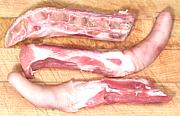

Pigs

Ingredients

Search
CloveGarden
SAFARI
Users
|
|
|
Shoulder
#403 |
Pork shoulder is somewhat more tender than leg and still has excellent
flavor, but for pork it doesn't make nearly as much difference as it
does with beef. |
|---|
Shoulder
Picnic |
Bone in
#405 |
 This is one of the most practical parts of the pig for roasting. It is
relatively inexpensive and very easy to prepare.
This is one of the most practical parts of the pig for roasting. It is
relatively inexpensive and very easy to prepare.
|
|---|
Boneless
#405A |
 This cut is a bit disorganized looking because of the complex bone
structure that must be removed.
This cut is a bit disorganized looking because of the complex bone
structure that must be removed.
|
| Picnic Steak
|
 Sliced from the Picnic Shoulder and deboned, this cut is a bit messy due
to the missing bones, but is popular in the Philippine markets. Note in
the photo the skin is still on, preferred by Filipinos for chops as well.
Sliced from the Picnic Shoulder and deboned, this cut is a bit messy due
to the missing bones, but is popular in the Philippine markets. Note in
the photo the skin is still on, preferred by Filipinos for chops as well.
|
Cushion
Meat
#405B
|
This is a boneless cut consisting of several muscles from the Picnic
Shoulder. The cuts may be various sizes.
|
Shoulder,
Boston Butt |
Bone-in
#406 |
 A common roast. The complex bone structure and substantial fat deposites
make other uses more difficult.
A common roast. The complex bone structure and substantial fat deposites
make other uses more difficult.
|
|---|
Boneless
#406A |
This cut may optionally be rolled and netted to make a roast of uniform
thickness.
|
Shoulder
Blade Steak
#1406
|
This is the pig version of the beef "7 bone steak", a slice from the Boston
Butt. A boneless version is #1407.
|
| Leg / Ham |
While the bulk of pig legs go to be cured and smoked to produce hams, there
are still plenty available fresh. This is a very large piece, but
fortunately my local vendor also sells 1-1/2 inch thick slices of leg.
|
|---|
| Leg |
Leg, Whole
#401 |
 The photo specimen was 11.5 by 7 inches across the face, 10-1/2 inches long,
and weighed 13 pounds 9 ounces. It included the hock, which was cut through
the bone but left attached by skin.
.
The photo specimen was 11.5 by 7 inches across the face, 10-1/2 inches long,
and weighed 13 pounds 9 ounces. It included the hock, which was cut through
the bone but left attached by skin.
. |
|---|
| Loin #410 |
Because of its large size (over 20 pounds) markets generally sell half
loins, bone in and boneless, but a whole loin can often be had on request.
|
|---|
| Loin |
Whole
#410 &
#412 |
 This whole loin (#410) was 31 inches long, 7 inches wide, 4 inches thick
and weighed 22 pounds 6 ounces. Shoulder end is to the right, ham end to
the left, including the tenderloin (bottom left). A center cut loin (#412)
is shorter with both the extreme ends cut off.
This whole loin (#410) was 31 inches long, 7 inches wide, 4 inches thick
and weighed 22 pounds 6 ounces. Shoulder end is to the right, ham end to
the left, including the tenderloin (bottom left). A center cut loin (#412)
is shorter with both the extreme ends cut off.
|
|---|
Boneless
Loin #413 |
 The boneless loin is generally sold as a center cut (as in the photo) or
a half loin. This boneless loin was 23 inches long, 6-1/2 inches wide,
2-1/2 inches thick and weighed 8 pounds 14 ounces.
The boneless loin is generally sold as a center cut (as in the photo) or
a half loin. This boneless loin was 23 inches long, 6-1/2 inches wide,
2-1/2 inches thick and weighed 8 pounds 14 ounces.
|
Loin Roast
#413A |
This is the Boneles Loin rolled up and tied with string so it presents a
uniform thickness for oven roasting. Full length can be supplied to restaurants
but in the markets it's more likely to be a half loin as shown in the
photo.
|
Canadian
Back #414 |
This is a specially trimmed boneless loin containing only the main
muscles. It is used mainly to make Canadian Bacon.
|
Baby Back
Ribs
#422 |
|
 Why they're called "baby" is beyond me. This is the set of ribs from the
loin cut away from the spine. Basically it's the rib part of the loin after
the meaty boneless loin has been removed. These ribs don't have the
cartilagenous material found with spare ribs.
Why they're called "baby" is beyond me. This is the set of ribs from the
loin cut away from the spine. Basically it's the rib part of the loin after
the meaty boneless loin has been removed. These ribs don't have the
cartilagenous material found with spare ribs.
|
|---|
Tenderloin
#415 |
Tenderloin |
 This muscle structure is found on the inside of the ribcage at the aft
end of the loin. Getting relatively little excercise and pretty much
devoid of fat or connective tissue it's the most tender meat on the pig.
The photo specimen, removed from the whole loin shown above, was
14 inches long, 3 inches wide at the widest point and 1-1/2 inches thick.
With the side muscle on it weighed 1 pound 6 ounces. With the side muscle
off (#415A) it weighed 1 pound 4-3/8 ounces.
This muscle structure is found on the inside of the ribcage at the aft
end of the loin. Getting relatively little excercise and pretty much
devoid of fat or connective tissue it's the most tender meat on the pig.
The photo specimen, removed from the whole loin shown above, was
14 inches long, 3 inches wide at the widest point and 1-1/2 inches thick.
With the side muscle on it weighed 1 pound 6 ounces. With the side muscle
off (#415A) it weighed 1 pound 4-3/8 ounces.
|
|---|
Chops
#1410 |
Chops |
The photo shows pork chops from three positions on the loin. To the left
is from the shoulder end (#1410A rib chops), center cut (#1412) in the
middle and sirloin end (#1410B end chops) on the right. #1410B also
covers chops from the extreme shoulder end (not shown here but similar to
the sirloin end chops). The classic "pork chop" shaped center cut chops
usually sell at a higher price and sirloin end chops at the lowest price.
Pork chops typically weigh between 6 and 8 ounces each.
|
|---|
Country-Style
Ribs #423 |
Ribs |
These are made from the rib section at the shoulder end of the whole loin.
The spine is removed but leaving the feather bones above and the ribs below.
The meaty part above the ribs is cut leaving half with the ribs and half
with the feather bones. The two sections sliced crosswise about 1 to
1-1/2 inchs thick and packed together. It is a meaty and economical cut
for the budget conscious.
|
|---|
| Pork Belly |
This part of the pig provides some very important products,
including spare ribs, bacon and salt pork. |
|---|
Boneless Belly
#408 |
|
Most pork bellies go straight to processors to cure, smoke and slice into
bacon, but fresh pork belly is widely used in Asian recipes. The photo
specimen is a half belly with skin, including the part that was over the
spare ribs. A cross section slice is to the left. The photo
specimen was 14 inches long, 10.5 inches wide, 2-1/4 inches thick at the
thickest point and weighed 6 pounds 10 ounces. A whole belly would be 28
inches long and weigh about 13 pounds.
|
|---|
Spare Ribs
#416 |
|
Spare ribs underlie the front portion of the Pork Belly cut. The photo
specimen is cut lengthwise "Santa Barbara style". The upper section, if
sold separately, would be "Saint Louis Ribs". Be aware, if using English
recipes, that in the UK "Spare Ribs" is a cut from the top of the shoulder
and actually contains no ribs (see
British Chart).
|
|---|
Salt Pork
|
|
Salt Pork is brined pork belly, the same as bacon but not smoked,
and with the skin on. It was formerly a very popular ingredient in American
cuisine, but fell out of favor due to the American Heart Association's
misguided vendetta against the natural fats we evolved with in favor of
deadly trans fats.
|
|---|
| Other Cuts |
While these unnumbered cuts are not normal to American
supermarkets, they are very popular in some other countries. Here in
Southern California they are all now easily available from ethnic
markets. |
|---|
| Head |
|
The main use for pig heads in North America is the making of head cheese,
a large sausage like item. Unfortunately they are still not easy to find
even in the ethnic markets in Southern California. The photo specimen, a
half head, weighing around 5 pounds and yielded about 3 pounds of material
suitable for head cheese. Regretably the ear was removed, but those are
easily replaced from the Philippine markets. |
|---|
| Cheek Meat |
|
This is kind of a "secret cut", unknown to the general public and still
economical. It is very lean and tough, but with a lot of
connective tissue in it, making it moist, tender and very flavorful
with long cooking. Ideal for braises and stews. These weigh about
3-3/4 ounces each. |
|---|
| Pork Jowl |
|
 The Jowl is just below the cheek, and is very different from the cheek.
Fresh Pork Jowl Meat is an unusual cut here in North America, it's just
the thickness of the meat layer. For the more familiar cured products
(Hog Jowl Bacon and Guanciale), which use the whole thickness, see our
Pork Products page.
The Jowl is just below the cheek, and is very different from the cheek.
Fresh Pork Jowl Meat is an unusual cut here in North America, it's just
the thickness of the meat layer. For the more familiar cured products
(Hog Jowl Bacon and Guanciale), which use the whole thickness, see our
Pork Products page.
|
|---|
Neck
#421 |
|
Pig necks are a convenient and economical ingredient for making soup
stocks, soups and stews.
|
|---|
| Snout |
|
Pig snouts are widely available in Philippine and other Asian markets.
Their major North American use is for pickling.
|
|---|
| Ears |
|
Pig ears are prized for their unique textures, chewy or gelatinous
(depending on how long they are cooked) on the outside and crunchy in the
inside. They are often used in Asian salads. The photo specimens were about
8-3/4 inches long, 6-5/8 inches wide and weighed a little over 3/4 pound
each.
|
|---|
| Tail |
|

Tails are popular in most pig raising regions and treated similarly to
pig feet, but they are meatier with a lot less tendons. Those shown in the
photo were prepared in the way normal for Asian markets, cut to lengths
and split in half lengthwise. The one in the center of the photo was
8-1/2 inches long. Markets for other ethnic populations may prepare them
less thoroughly. |
|---|
Hocks, Fresh
#417
Ham Hocks
#561 |
|
Most Americans are familiar with the smoked "ham hock" form used in our
Southern cuisine, but fresh ham hocks are widely available in ethnic and
specialty markets. In Europe, salt cured but unsmoked hocks are often used.
|
|---|
Feet
#420 |
|
Pig feet are widely used throughout Europe, Asia, Mexico and parts of
South America, both to add body to soups and stews and cooked on their own
or pickled. The photo shows the common form, just the foot, and the long
form with hock. Feet weigh between 14 ounces and 1-1/2 pounds, "long feet"
from 1-3/4 to 2-1/2 pounds.
|
|---|
| Skin |
|
Pig skin is used in many recipes, from Southeast Asia through China and
Mexico. The photo specimen skin was peeled from a whole pork leg and
weighed 13-1/2 ounces with the fat thoroughly scraped off.
|
|---|
| Innards |
In traditional agricultural regions, all edible parts of
an animal are eaten, including internal organs. These are different in
taste and texture from muscle meats and some are highly prized and
expensive. Most Americans, however, are unfamiliar with them and how
they are used, so innards tend to be rather economical here. |
|---|
Tongue
() |
|
Pork tongues are eaten by pretty much every culture where pig is a
significant item in the diet. They are not nearly as fatty as cow tongues
but like them are sometimes pickled. The photo specimen was 7-3/4 inches
long and weighed 12-1/4 ounces. It cooked down to 7 ounces. |
|---|
Kidneys
() |
|
Pork kidneys are eaten by pretty much every culture where pork is a
significant item in the diet. Though larger in size, they are similar
shape and taste and are generally interchangeable with lamb kidneys (unless
you're a Muslim or observant Jew). |
|---|
Liver
() |
|
As with the livers of other meat animals, pig liver is usually cooked
with onions. The photo specimen is typical of how it is sold, 9-1/2
inches by 4-1/2 inches and 1-1/4 inch thick, weighing 1 pound. |
|---|
Heart
() |
|
Pig hearts are eaten by pretty much every culture where pig is a
significant item in the diet. The meat is dark and tough so needs long
cooking (simmering about 4 hours). The photo specimen was 4-1/2 inches
by 3-1/2 inches. and weighed 14 ounces, a bit larger than lamb hearts
and a whole lot less fatty. |
|---|
Spleen
(Melts) |
|
These are usually labeled "Pork Melts" in the markets to avoid the
rather anatomical designation "Spleen". Long and thin, they are often used
rolled up.
|
|---|
Pork Lungs
(Lights) |
|
Pig lungs are popular in the Philippines, particularly for a dish called
bopis, but selling lungs is not legal in the United States so bopis has
to be made without them here, unless you slaughter your own pig. |
|---|
| Stomach |
|
The pig, being an omnivore like humans, has a stomach much different from
that of cows and sheep. It is usually stuffed and sewn up but may also be
an ingredient like tripe. The photo specimen, actually a half stomach,
weighed 1/2 pound. |
|---|
Pork Bung
Hog Bung |
|
This is the rectum and large intestine of the pig. In the west it is
commonly used as a large sausage casing. In East and Southeast Asia it is
a popular street food. The photo specimens were 23 inches long, 2 inches
diameter at the big end and weighed 6-1/4 ounces.
|
|---|
|
Small Intestine |
|
I have not yet found these in Los Angeles, though they are popular in
the Philippines to make a simered, then deep fried, appetizer called
Chicharon Bituka. These are removed from the Ruffle (see below) and sold
separately. The sub-mucosa membrane layer is also stripped off to make
sausage casings, which are easily available here in Asian markets.
|
|---|
|
Ruffle Fat |
|
Not actually fat, though it is fatty. This is the mesentary of the pig, a
fold of the body cavity wall that serves to hold the small intestine in
place, yet give it a lot of freedom to expand and contract. Preparing this
as an appetizer, Chicharong Bulaklak
is a Philippine specialty. |
|---|
Caul Fat
Lace Fat
Crépine (fr) |
|
This is a fatty membrane (greater omentum) from the inside of the pig's
body cavity. It is held highly desirable for a number of European recipes
as a wrapper that will automatically baste what it is wrapped around. The
photo specimen, laid out, not stretched, on a 12 x 18 inch cutting board,
weighed 4-3/8 ounces. It was purchased from the freezer cases of a large
Asian market in Los Angeles. |
|---|
| Brains |
|
Pig brains are eaten in some cultures and are particularly popular in
the Philippines, but current thinking in North America is that they are not
entirely safe. I have not seen them for sale in Southern California.
At this writing (2010) there is an onging investigation of severe
nervous problems at a pig processing plant where the brains were blown out
with compressed air. |
|---|
Testicles
(Pork Fries) |
|
Pig testicles are popular in Romania but are pretty much unavailable
in North America. Here nearly all male pigs are castrated right after
birth when their testicles are still too undeveloped for sale. Sheep
testicles are fairly available and can be used as a substitute. |
|---|
| Uterus |
|
This part cuts into uniquely shaped pieces with a texture that's
equally unique. They can be served simmered in sauces or as an
appetizer with dips.
|
|---|
|